郷土料理、産品、生産者の背景を一つの体験として届け、現地の食関係者・コミュニティとの会話を生み出します。
地域版を相談する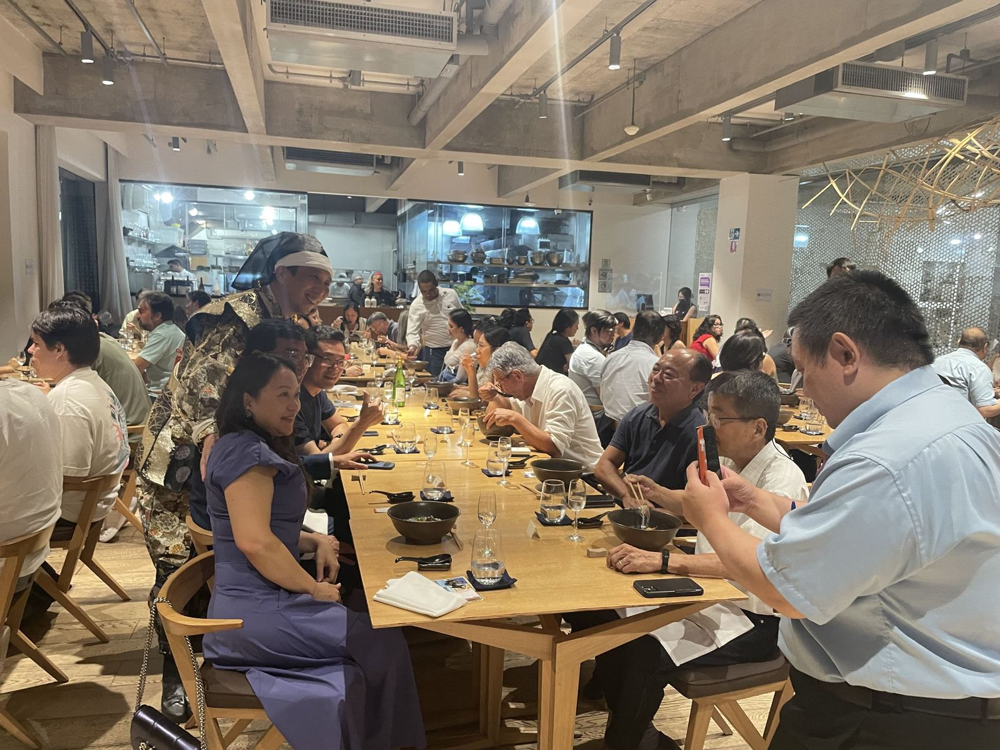
地域の郷土料理を実際に味わってもらい、産地への関心を体験からつくります。
料理とあわせて地域産品を紹介し、購買・取引の入口を自然な形でつくります。
生産者の背景や土地の歴史を語りとして届け、現地コミュニティとの会話を生みます。
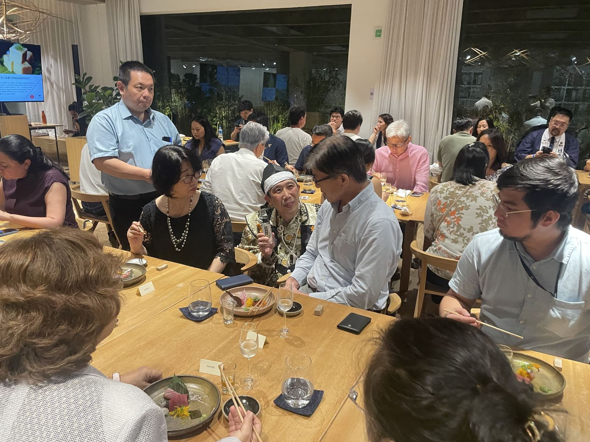
約60名の現地飲食・文化関係者、熊本にルーツを持つ日系人の方々を迎えて開催。サムライ姿で登壇した西田が熊本の赤酒で乾杯の挨拶を行い、酒サムライ 飯田アレシャンドレ氏も参加しました。シェフによる特別コースでは、馬刺し、からし蓮根、日本酒、米菓など熊本県産品を取り入れた料理を提供。会場では、熊本にルーツを持つ参加者が先祖の渡航証明書を持参し、望郷の思いを語る場面もありました。参議院議員 松村祥史事務所からも祝辞をいただき、現地メディアの取材も受けています。
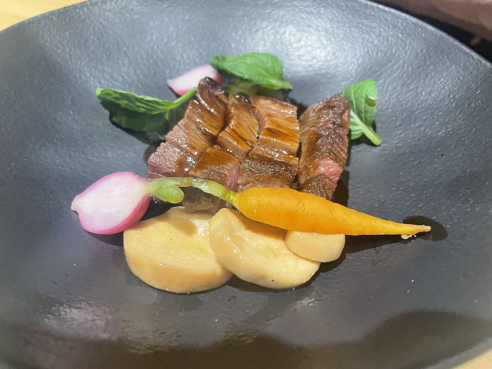
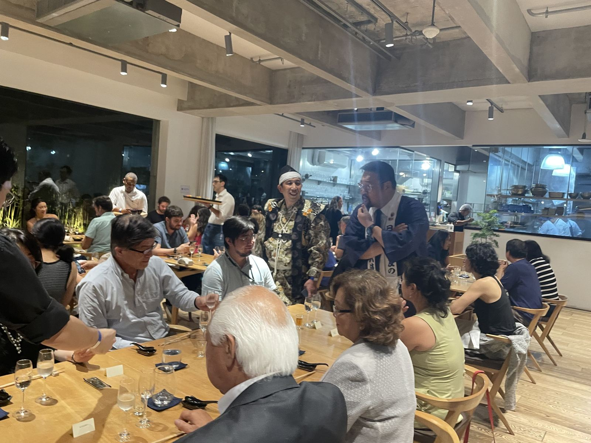
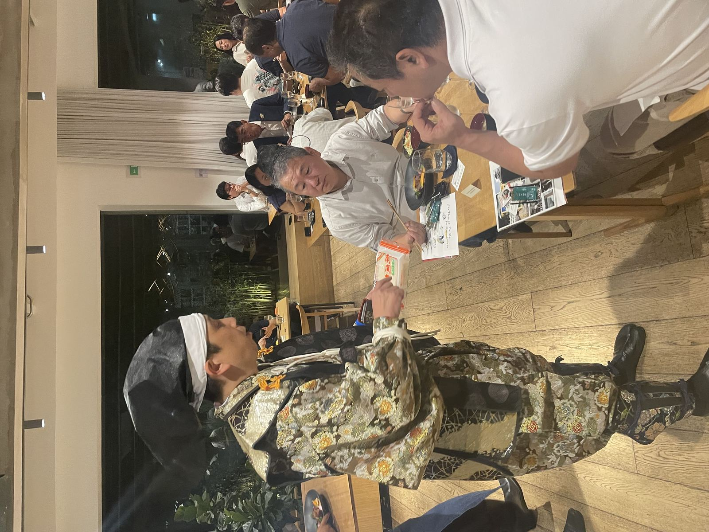
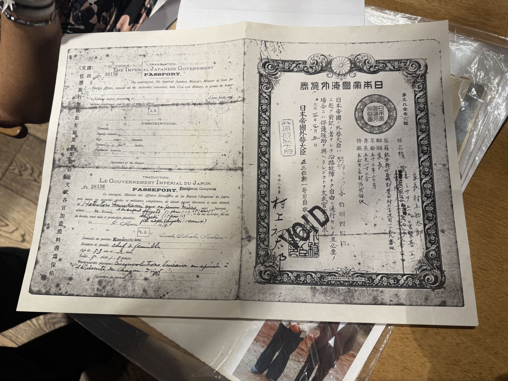
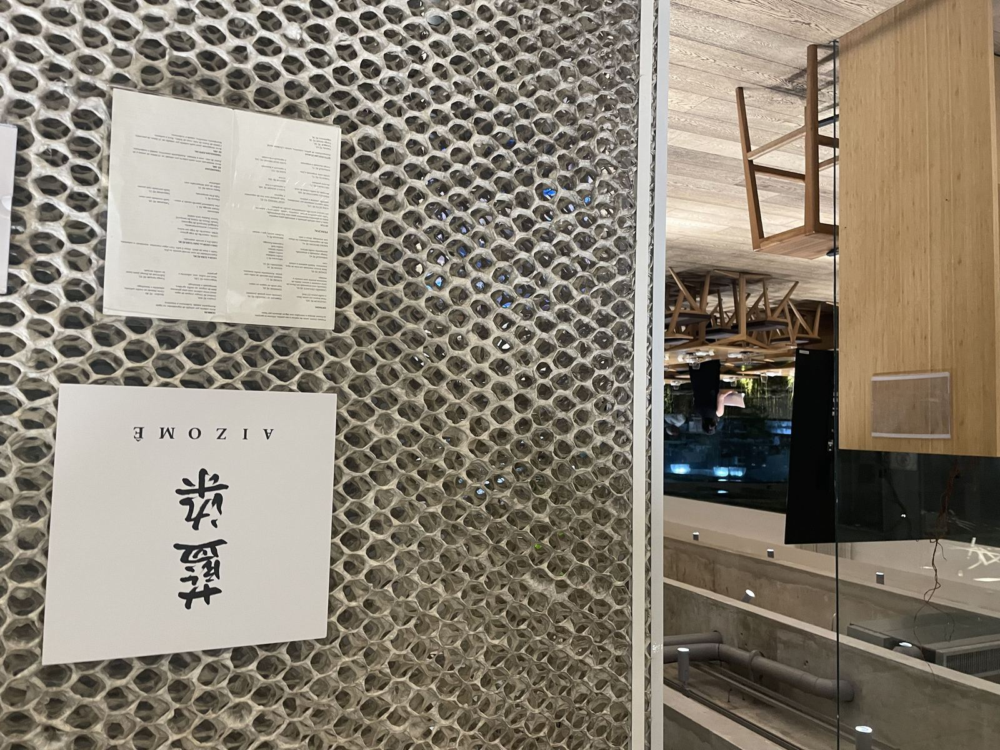
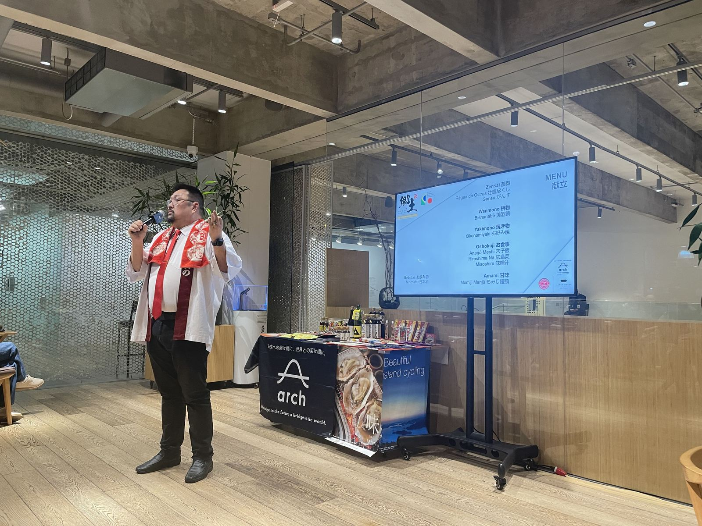
熊本編に続く第2弾として、広島菜漬、がんす（練り物）、焼き穴子など広島県産品を取り入れたコースを提供。前菜からお食事、甘味まで一続きの体験として構成し、広島県人会の関係者を含む現地の食関係者・コミュニティに広島の食文化を届けました。熊本編同様、現地メディアの取材を受け、参加者からは故郷を思い起こす感慨深い反応が寄せられています。
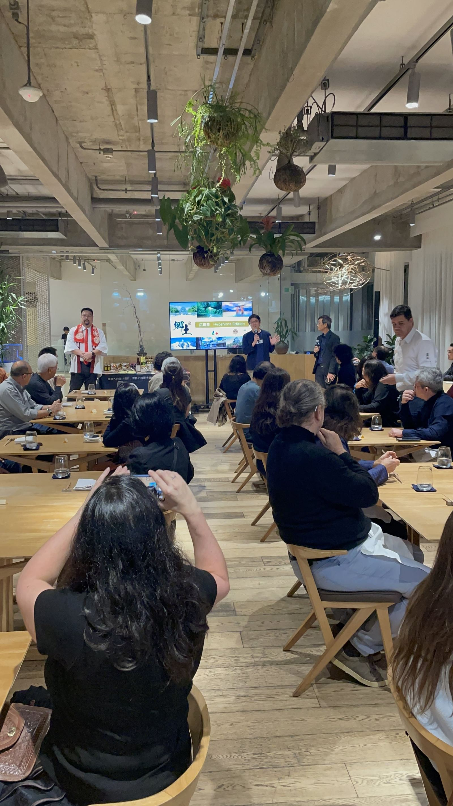
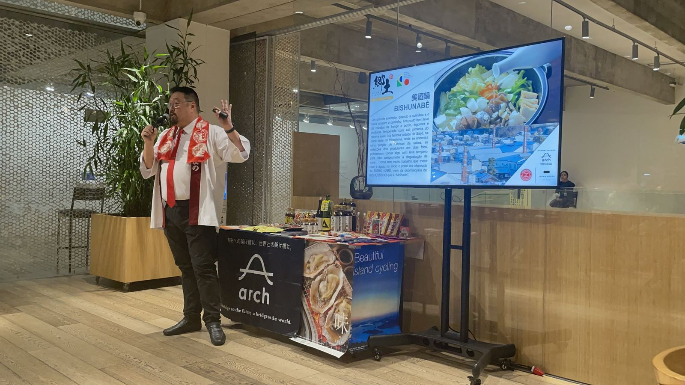
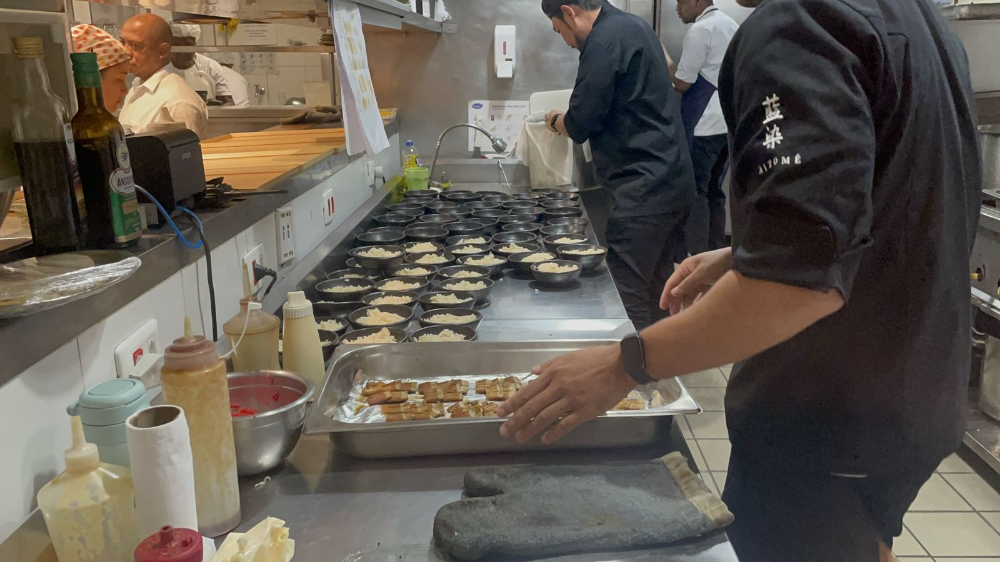
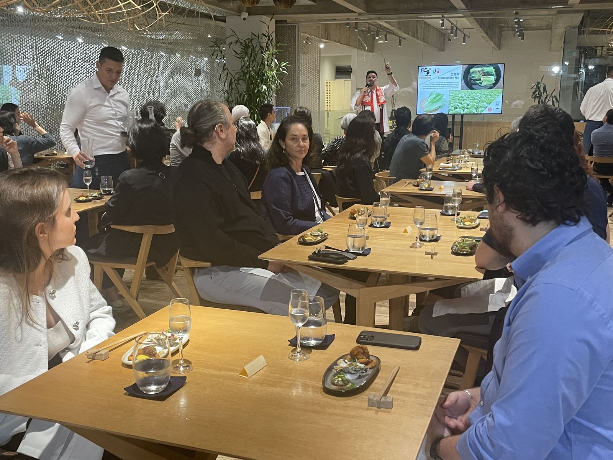
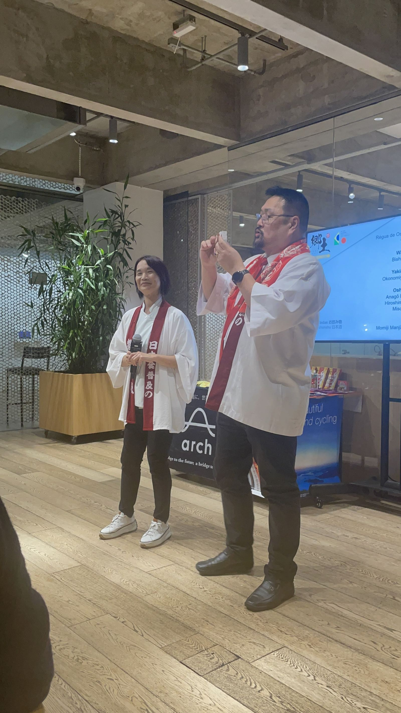
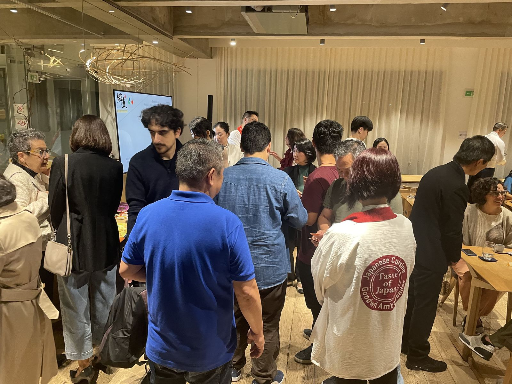
対象、予算、時期が未定でも構いません。現在分かっていることと、まだ決まっていないことを整理します。
地域版を相談する